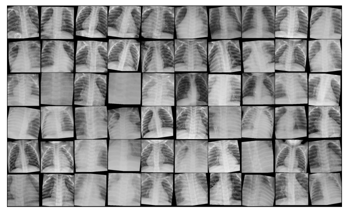
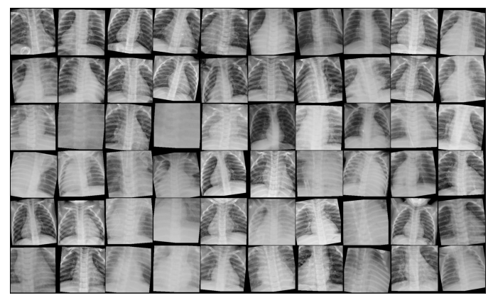

Detected Pneumonia in chest X-Ray scans using Convolutional Neural Networks and transfer learning with a F1-score of 92%.

Predicted heart disease using different machine learning models, with best model achieving 85% F1 score
Classified images of 120 dog breeds using Convolutional Neural Networks and transfer learning achieving 88% accuracy.

Created dashboards for visualizing datasets using Tableau.
Simple Neural Network with one hidden layer for classifying MNIST digits with accuracy of 96%.
Trying out ARIMA forecasting of COVID-19 cases combining Google Trends search data.